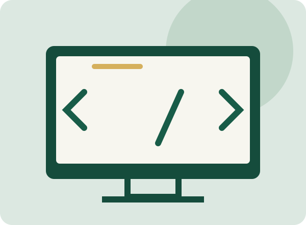

Explora · Conecta · Crea
La tecnología,
pieza por pieza.
De los componentes de una computadora a las páginas que visitas. Un recorrido sencillo para entender cómo se conecta todo.
Comenzar el recorrido →
Tres puntos de partida
03
Desarrollo web
Tres tecnologías que trabajan juntas para construir una experiencia web.
Explorar desarrollo web →